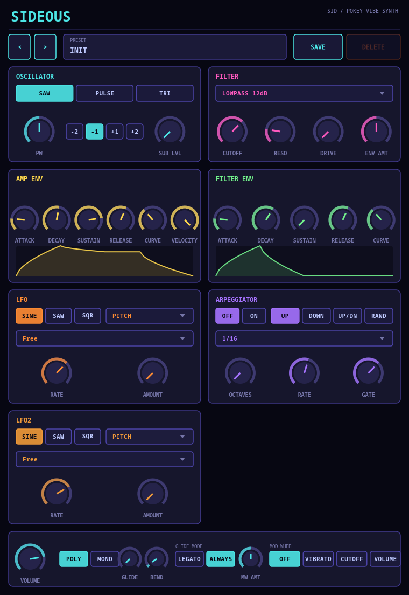
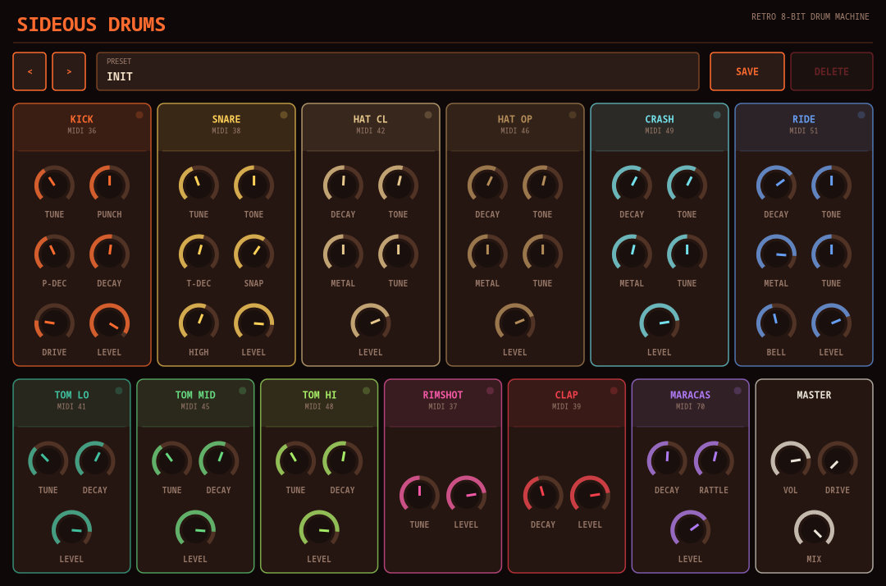
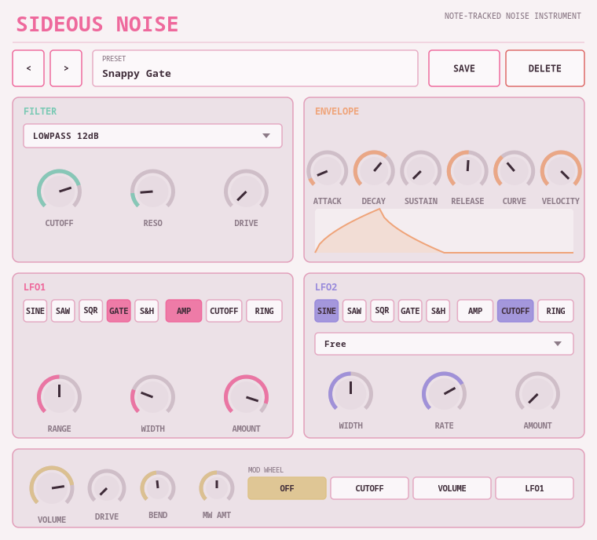
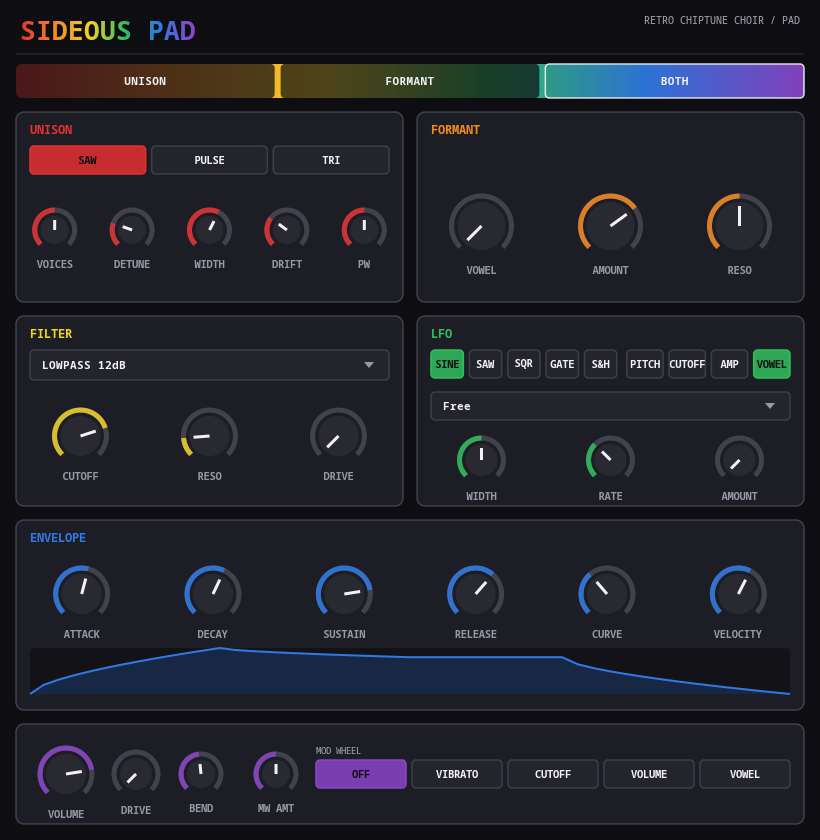
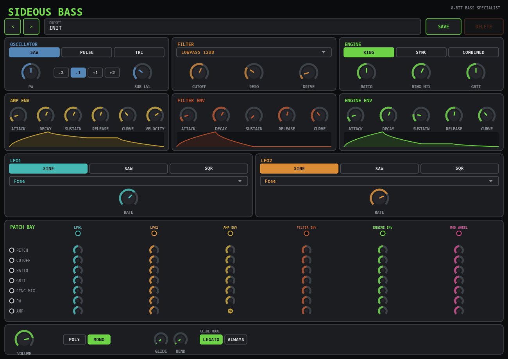
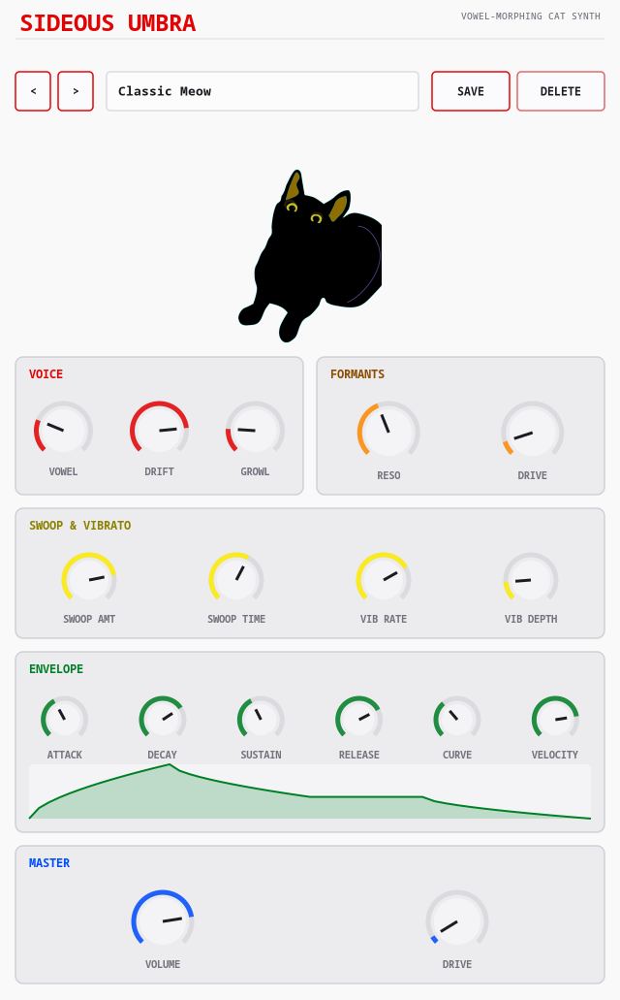
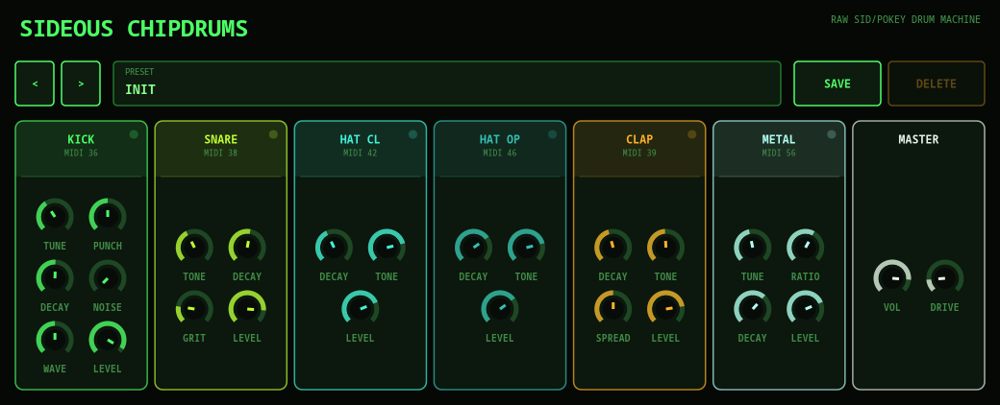
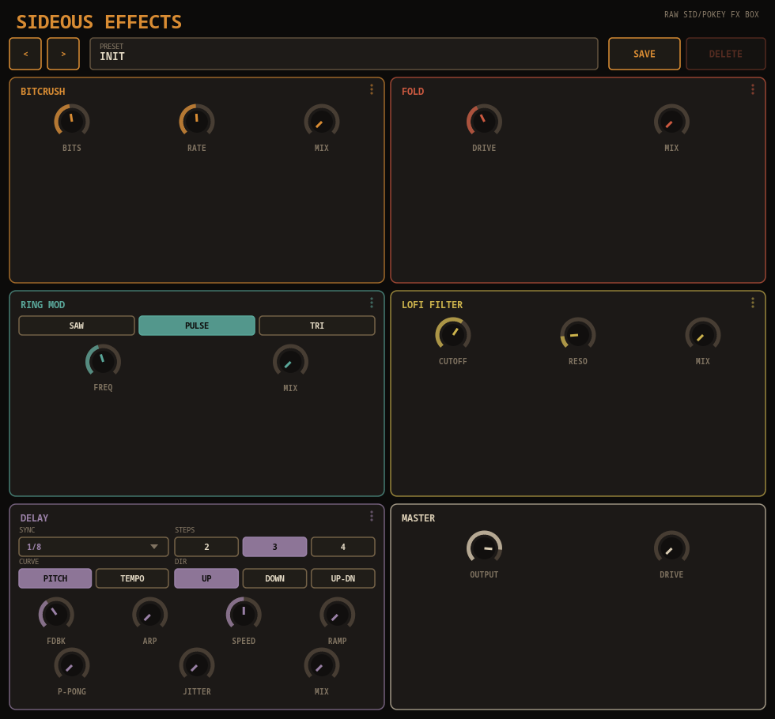
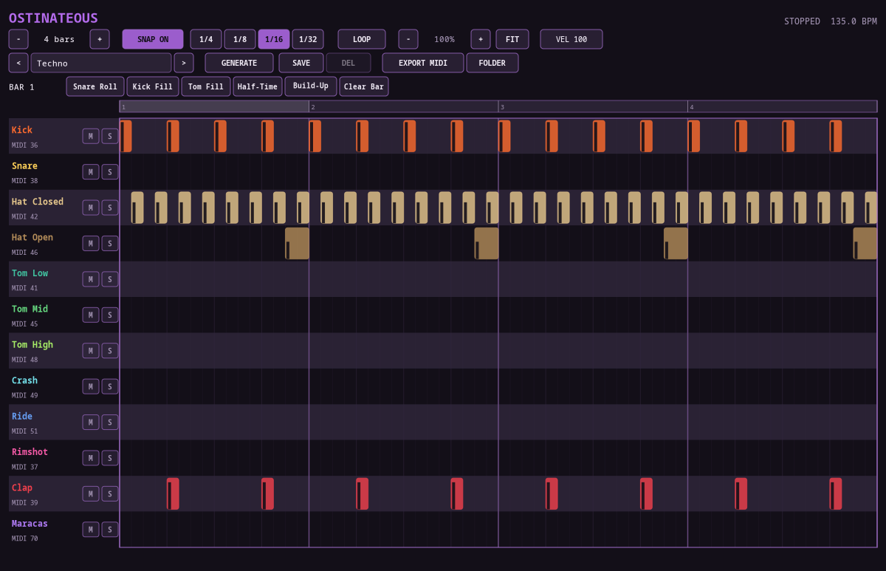

Sideous
SID / POKEY-vibe synthA SID/POKEY-flavored chiptune synth (VST3 / LV2 / CLAP / JACK standalone) with a hand-drawn Cairo-based retro UI. No built-in delay/reverb on purpose — plug it into whatever effects you already use.

- Saw / pulse (variable width) / triangle oscillator plus a sub-oscillator (±1/±2 octaves)
- Switchable 12/24dB lowpass/highpass filter plus a simplified Moog-style ladder, with resonance and drive
- Dual shapeable ADSR (amp + filter cutoff) with a live curve-graph visualization
- Two independent tempo-synced LFOs (1/1 to 1/64, dotted/triplet), each targeting pitch, filter cutoff, amplitude, or pulse width — e.g. one on pulse width and the other on pitch (vibrato) at once, and a 4-pattern arpeggiator
- 16-voice polyphony, or mono with portamento and legato control
- Knobs show live values while being automated, not just while dragging
- Built-in file-based preset browser (Prev/Next, rename, save/delete) with 11 factory presets, works in every format including the JACK standalone
Sideous Drums
analog-style drum machineA retro analog-style drum machine, companion to Sideous, same visual family with a warmer drum-machine-chassis palette. Modeled on classic 808/909-style analog drum machines, not an 8-bit/chip sound — that's what Sideous ChipDrums below is for. RD-9-style layout — one column per drum, each with its own knobs and accent color.

- Fixed 12-voice kit (kick, snare, hats, 3 toms, crash, ride, rimshot, clap, maracas), GM-ish MIDI map
- Kick/toms use a pitch-envelope "sweep" trick; snare layers pitched tone over independently-decaying noise
- 6-oscillator FM metallic stack for hats/crash/ride, ring-modulated in pairs for extra inharmonic density, with Metal blend and a Tune knob that transposes the whole partial set like a real analog cymbal "tune" pot
- Hats/crash/ride are genuinely stereo (detuned oscillator/filter/noise chains per channel) with a slow always-on shimmer LFO so the decay tail keeps moving instead of sitting on static noise
- Ride adds a tighter, more harmonic partial cluster plus a dedicated pitched Bell "ping" layer so it's not just Crash with a longer decay
- Attack knob plus a fixed broadband strike-transient "click" on every cymbal hit — a band-limited wash fading in, however fast, still can't fake a real stick strike
- Clap's Tone sweeps its bandpass center, Hands (1-7) sets how many retriggered pulses make up one hit — 1 is a single clean hit, higher spreads it into more of a "crowd" clap
- Maracas is a resonant-bandpass multi-grain "rattle" (Rattle knob) instead of a plain noise burst — reads as a shaker, not another hi-hat
- Closed/open hi-hat choke group
- Click-to-audition trigger pads and live per-voice LED meters built into each column header — hear a sound change without touching a MIDI keyboard
- Host-visible note names: Ardour reads them automatically via LV2 MIDNAM, VST3 hosts via IUnitInfo pitch names
- Two builds: single stereo mix, or a 13-bus multi-out version for per-drum routing/sends
- Master Drive/Mix stage as a character control, not just a limiter
- Built-in file-based preset browser with 10 factory presets (808/909, Trap, Lo-Fi Chip, Industrial, and more), each hand-tuned to carry the newer cymbal/clap/maracas controls too — works in every format including the JACK standalone
Sideous Noise
note-tracked noise instrumentA polyphonic noise instrument, own light-pastel visual identity. The played note's pitch sets an LFO's rate, not an oscillator's pitch — low notes give rhythmic gated noise, high notes push the same LFO into audio range for buzzy, ring-mod-like texture. One mapping, whole keyboard, no mode switch.

- White noise through a switchable filter (12/24dB LP/HP, 12dB bandpass, Moog-style ladder)
- LFO1's rate always tracks the played note, shiftable by octaves from rhythmic to audio-rate
- Gate (adjustable duty cycle) and Sample & Hold waveforms for hard percussive on/off blips
- A second free-running or tempo-synced LFO for extra movement without a second envelope
- 16-voice polyphony with independently-seeded voices — chords stay decorrelated, not just louder
- Pitch bend actually bends LFO1's rate — the closest thing this instrument has to "pitch"
- Built-in file-based preset browser with 10 factory presets spanning sub-rhythm to audio-rate buzz, works in every format including the JACK standalone
Sideous Pad
chiptune choir / padA retro chiptune choir/pad instrument, own pride-rainbow visual identity. Two synthesis engines feed every voice: detuned-unison "pad" and vowel-formant "choir," selectable or combined per Voice Mode.

- Voice Mode: Unison / Formant / Both — detuned chip-oscillator stack, vowel formant filter bank, or both in series
- Up to 5-voice unison with detune spread, stereo width, and slow independent per-voice pitch drift
- 3-band resonant formant filter continuously morphed across Ah→Eh→Ee→Oh→Oo via a single Vowel knob
- LFO can sweep the Vowel knob itself for a slow "talking pad" effect
- Same filter/ADSR toolkit as the rest of the family, true stereo path end-to-end so unison width survives
- 8-voice polyphony as a chord instrument, with live-updating automated knobs
- Built-in file-based preset browser with 8 factory presets (Angelic Choir, 8-Bit Cathedral, Talking Synth Voice, and more), works in every format including the JACK standalone
Sideous Bass
8-bit bass specialistA bass specialist, own gunmetal/industrial visual identity. Built around the specific 8-bit synthesis tricks that make retro Atari/C64-style bass buzz and clang — ring mod, oscillator sync, and a SID-style bit-ANDed "combined waveform" — plus a fully patchable modulation matrix instead of fixed LFO routing.

- Switchable Engine: Ring mod, hard sync, or SID-style bit-ANDed "Combined" waveform with a Grit knob for bitcrushed crunch
- Patch Bay: a 6×7 mod matrix (2 LFOs, 3 envelopes, mod wheel → pitch, cutoff, ratio, grit, ring mix, PW, amplitude) with live animated patch cables
- Same filter toolkit as the rest of the family (12/24dB LP/HP + Moog-style ladder), self-resonant growl pairs with all three engines
- Three envelopes (Amp, Filter, Engine) and two LFOs, all just Patch Bay sources — nothing is hardwired except Amp Env → VCA
- Mono-with-portamento by default, or 8-voice poly for stacked bass; Legato/Always glide control
- Built-in file-based preset browser in the plugin UI itself, works even in the JACK standalone with no host browser
Sideous Umbra
vowel-morphing cat synthA small, silly, genuinely playable cat-meow synth — the small/joke plugin in the family, deliberately kept tiny: 18 parameters, no mod matrix. A PolyBLEP sawtooth "vocal fold," crossfaded with noise for rasp, drives three formant filters swept by a single Vowel knob (ah→eh→ee→oh→oo) — the same trick real vocal tracts and cat meows use to get their color.

- Saw/noise "vocal fold" source through three parallel bandpass formant filters interpolated across a 5-point vowel table
- Vowel knob morphs the whole timbre continuously from "ah" to "oo," with shared Resonance and Drive across F1/F2/F3
- Dedicated two-stage Swoop pitch envelope per note-on (independent of the amp envelope) for the classic upward "mrreow," or negative amounts for a downward whine
- Sine vibrato stacks on top of Swoop so every note gets its own little pitch performance
- Analog-style shapeable amp envelope with velocity sensitivity, plus a tanh-crossfade Master Drive for character rather than just limiting
- 8-voice polyphony (smaller than the 16-voice siblings on purpose), mascot cat rendered as a rainbow-gradient silhouette
- Built-in file-based preset browser with 9 factory presets (Classic Meow, Angry Yowl, Robo-Cat, and more), works in every format including the JACK standalone
Sideous ChipDrums
raw SID/POKEY-chip drum synthThe small, primitive sibling to Sideous Drums — deliberately the opposite: 6 voices, 2-6 knobs each, no filters beyond a plain highpass/bandpass, no stereo trickery, just pulse oscillators, one-bit-ish noise, and a ring-mod clang. Green-phosphor CRT terminal look instead of a studio-rack palette.

- Fixed 6-voice kit (kick, snare, closed/open hat, clap, metal), GM-ish MIDI map
- Kick's pulse oscillator (Wave: Saw/Pulse/Triangle) driven by a fast decay-only pitch envelope, plus a Noise knob to blend in a raw noise layer
- Snare blends a fixed-pitch pulse buzz with highpassed noise, Grit knob for extra digital crunch
- Metal is a ring-mod two-oscillator engine straight into an envelope — the raw inharmonic product is the cowbell/percussion-metal sound
- Click-to-audition trigger pads and live per-voice LED meters built into each column header
- Host-visible note names via LV2 MIDNAM / VST3 IUnitInfo, same as Sideous Drums
- Two builds: single stereo mix, or a 7-bus multi-out version for per-voice routing/sends
- Built-in file-based preset browser with 7 factory presets (SID Basic, POKEY Punch, Arcade Kit, and more), works in every format including the JACK standalone
Sideous Effects
chip-vibe effects boxThe first pure-effect plugin in the family — stereo audio in/out, no MIDI. Five stages carry the same raw chip character as the rest of the family, drag-reorderable into any sequence you like, with a "broken cassette deck" visual identity instead of a reskin of its instrument siblings.

- Bitcrusher, Wavefolder, Ring Mod, Lo-fi Filter, and Delay can be dragged by their panel header into any processing order — Master (Drive/Output) always runs last
- Every stage has its own Mix knob, all defaulting to 0 — a freshly-loaded instance is a clean pass-through until you dial a stage in
- Tempo-synced "chip-arpeggiated" Delay: Steps (2-4 taps), Curve (Pitch/Tempo spacing), Direction (Up/Down/Up-Down), Ping-Pong, Jitter, plus a flat Speed multiplier and a within-grain Ramp
- Shift+drag/scroll snaps the Delay's Arp and Speed knobs to whole semitone steps
- Ring Mod carrier is switchable Saw/Pulse/Triangle; Lo-fi Filter is a resonant lowpass for dulled, muffled textures
- Built-in file-based preset browser with 6 factory presets (Telephone Crush, Arcade Echo, POKEY Quantize, and more), works in every format including the JACK standalone
— Additional stuff —
Ostinateous
tempo-synced MIDI drum sequencerNot a synth voice like the rest of the family — a piano-roll MIDI pattern sequencer meant to sit in front of one (Sideous Drums or anything else). Zero audio ports, MIDI out only, sample-accurate host tempo sync, and its own light-gray/black/purple/pink look rather than a reskin of its siblings.

- Click/drag/paint/rubber-band note editing, per-note velocity, Ctrl+click multi-select
- Per-row Mute/Solo, standard mixer behavior
- Reads host transport frame position directly for click/stuck-note-free sync across starts, stops, seeks, and tempo changes
- 7 factory genre patterns (Techno, House, Minimal Techno, Trance, Drum & Bass, Dubstep, Hardstyle) plus algorithmic Generate variations
- Bar-targeted fills (Snare Roll, Kick Fill, Tom Fill, Half-Time, Build-Up) and a saved-pattern library
- Standard MIDI File export to a configurable folder, defaulting to Ardour's own Clips folder when present